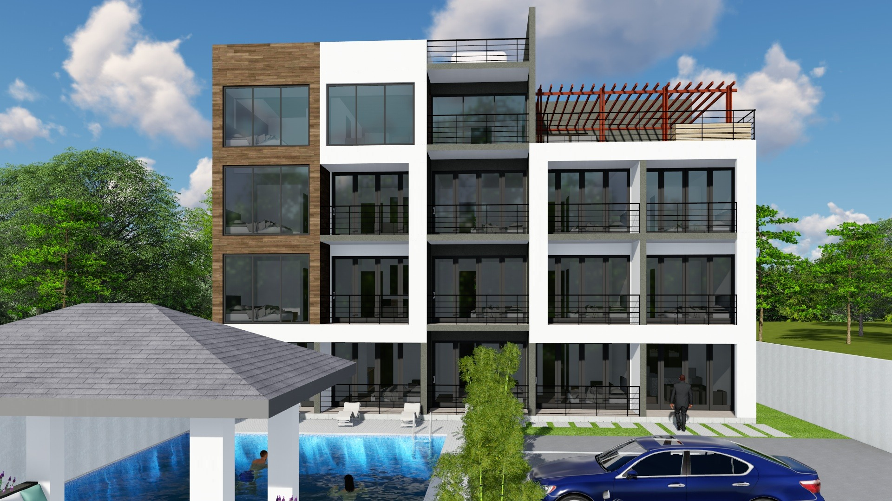
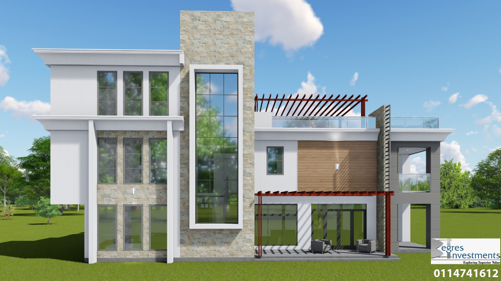
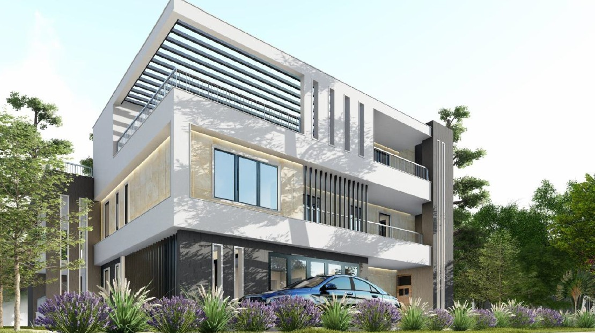
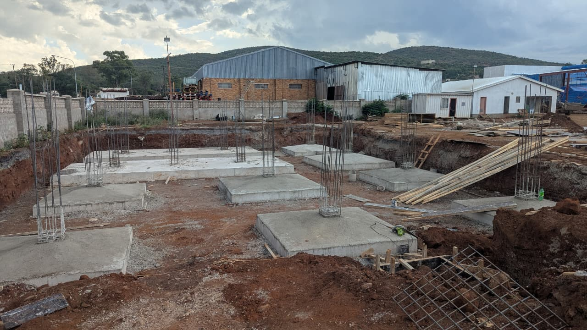
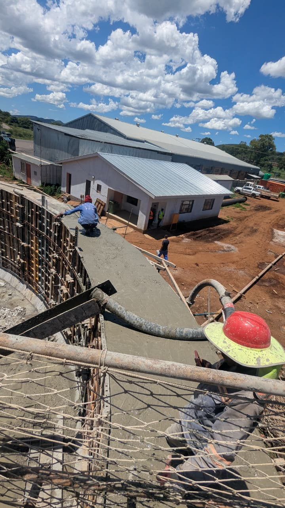
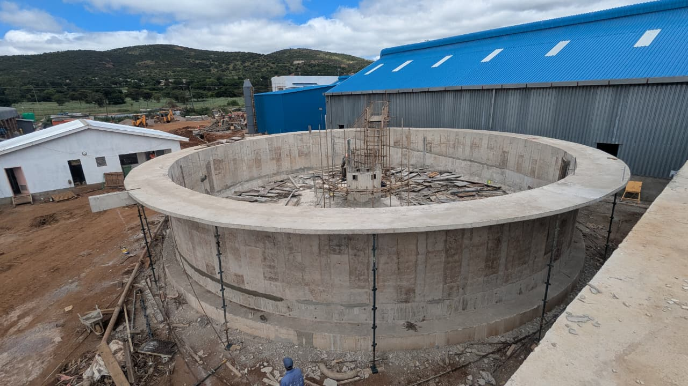
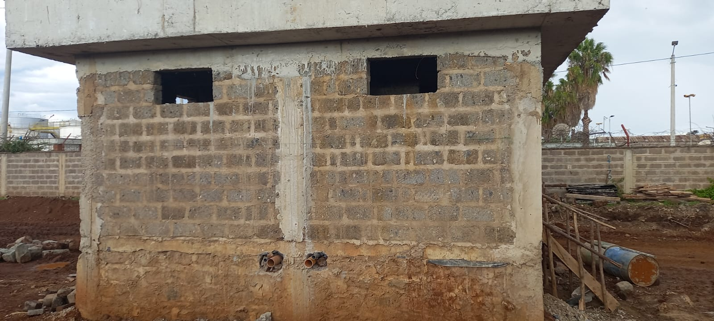
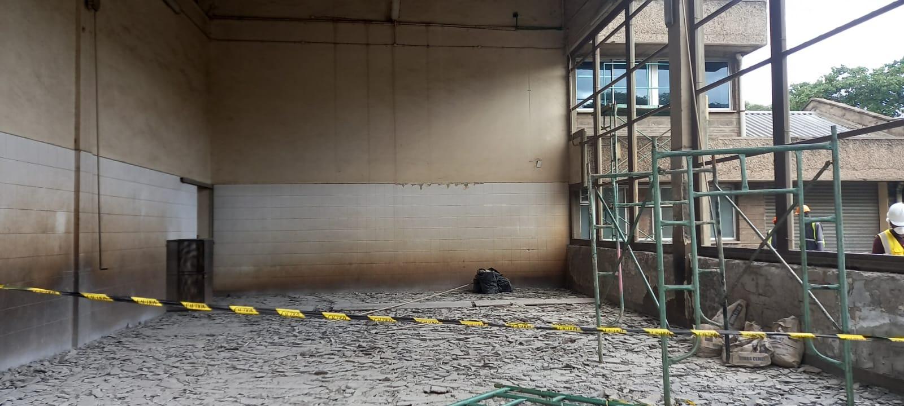
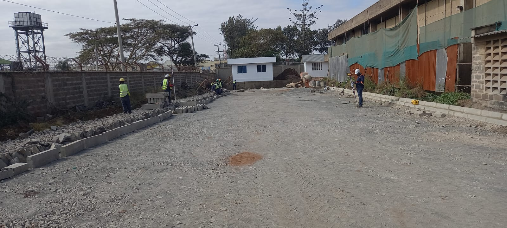

Hi, I am Lawrence Kiminja.
I am a Civil Engineer with over 5 years of local and international experience across multi-sector projects in Building construction, Energy, Roads and Water infrastructure. With progressive engineering experience, I have actively directed project lifecycles, starting my career in Contract Management roles, to Structural design & detailing and comprehensive project and site management roles for public and private sector projects. This has anchored my career in technical and leadership roles, helping to deliver complex projects on time and within budget.

Engineered for the Real World
From contract award to the last brick — I've been there
"A good Engineer will take any badly run and poorly resourced project and successfully deliver it on time and within budget."
Having worked in Construction in various project life cycles, I have tried to live by that inspiration. I have come to learn that a successful construction project is rarely the result of one thing done well. It's a hundred small decisions made correctly, under pressure, by people who know what they're doing.
Over five years across building multi-sector infrastructure, I've learned to be that person at every stage of delivery, successfully delivering both private and public projects to completion.
Engineering Projects Portfolio
Click directly on any image stack to smoothly sweep and reveal the next asset.



Residential & Commercial Frameworks
Structural configuration, sizing calculations, and blueprint configurations matching custom footprints and zoning guidelines.



Infrastructure Integrity Appraisals
Condition modeling, safety load evaluations, and diagnostic layouts analyzing specialized public utility and treatment structures.



KPC Structural Analytics
High-load configuration reviews requiring meticulous component assessments and rigorous industrial site stability protocols.
Technical Services
Rigorous, multi-sector engineering workflows deployed to demanding public & private projects.
Structural Analysis
Advanced structural configurations optimized across specialized layouts to guarantee structural integrity.
Contract Administration
Comprehensive review pipelines, specification management, and structural execution monitoring protocols.
Detailing & Modelling
High-fidelity schematic mapping down to exact bar layouts, reinforcement shapes, and spatial parameters.
Project Coordination
End-to-end execution path monitoring balancing contractor timelines with site safety compliance metrics.